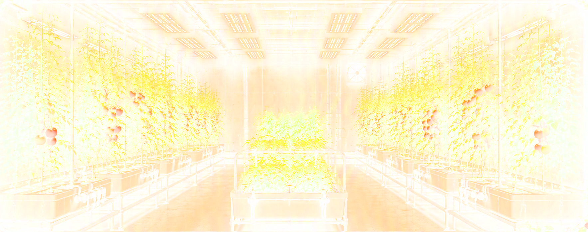

FEATURED PROJECTS
[ FULL VIEW ]
Technology & Innovation
Exploring cloud, AI, frontend architecture, and the systems shaping tomorrow.
ABOUT ME
[ BIO ]
GITHUB TELEMETRY
LIVE REPO ↗
Syncing repository telemetry...
DAILY FEED

Soil Perlite Ratios, Fabric Grow Bags & Root Zone Oxygenation Guide
How breathable fabric containers and proper aeration amendments prevent root-bound stress and boost nutrient uptake.
LIVE FEED
02
00:00:00
[ FULL VIEW ]
ART ARCHIVE
1 / 28
[ FULL VIEW ]
Limestone Peak 1
Early 2000s 3D terrain & digital landscape render archive. Click to inspect full gallery.